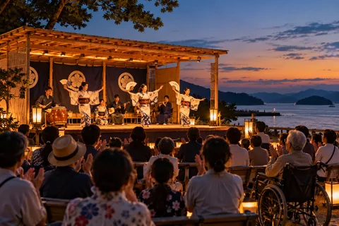
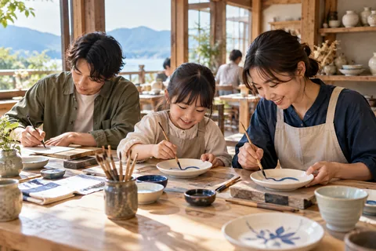
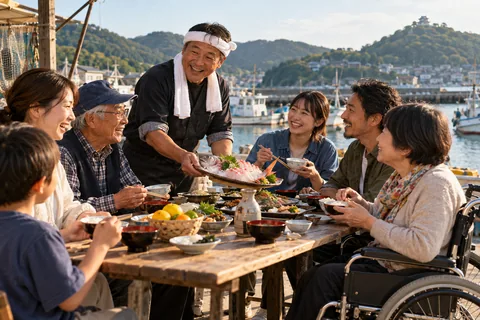
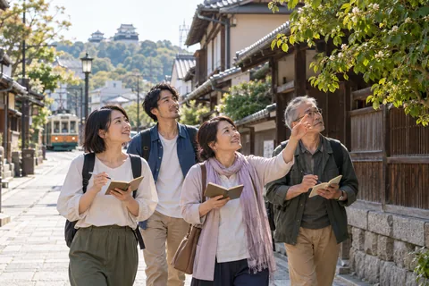
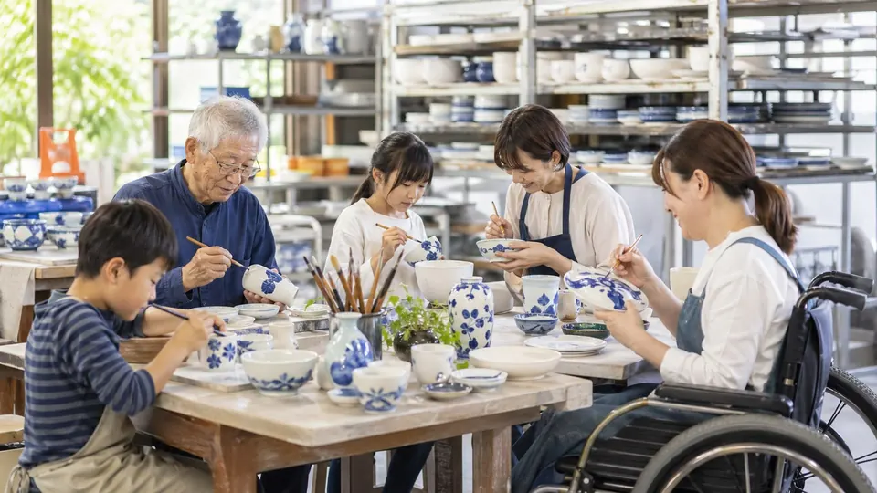

瀬戸内文化ステージ（仮）
松山市 / 舞台 / 手話通訳あり
無料手話通訳あり
イベント詳細を見る
行きたい催しを探す
日付、市町、ジャンル、バリアフリー対応などでイベントを探す一覧ページです。

掲載内容の仮イメージ

松山市 / 舞台 / 手話通訳あり

砥部町 / 工芸 / 親子向け

宇和島市 / 食文化 / 車椅子席あり

松山市 / 文学 / やさしい日本語
条件に一致するイベント例はありません。
掲載イメージ
正式決定後、この方針に沿って具体的な情報を掲載します。
正式決定後、この方針に沿って具体的な情報を掲載します。
正式決定後、この方針に沿って具体的な情報を掲載します。
完成形の具体例
会期や事業構成が決まるまではモデルイベントで見せ方を示し、会期前・会期中は日付、市町、ジャンル、予約要否、料金、バリアフリー対応をイベントカードと詳細ページに連動させます。
「イベントカレンダー」では、サムネイル、日時、市町、ジャンルをカードに表示ための情報を整理します。
正式決定後は、この方針に沿って本文・資料リンク・問い合わせ先を更新します。
ページの役割
日付、市町、ジャンル、バリアフリー対応などでイベントを探す一覧ページです。
写真表現



同じ分類のページ
問い合わせ導線
担当部署、受付時間、メールアドレス等は正式決定後に掲載します。現段階では仮導線として総合問い合わせへ誘導します。
未確定の掲載案・表示例を含みます。正式名称・会期は大会概要でご確認ください。
大会概要を確認